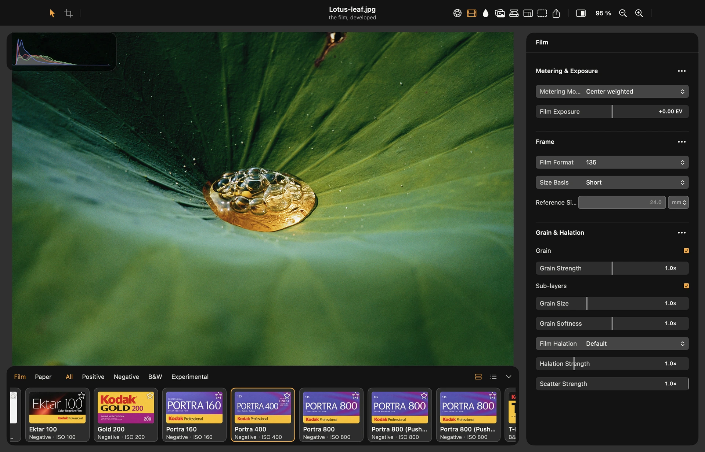
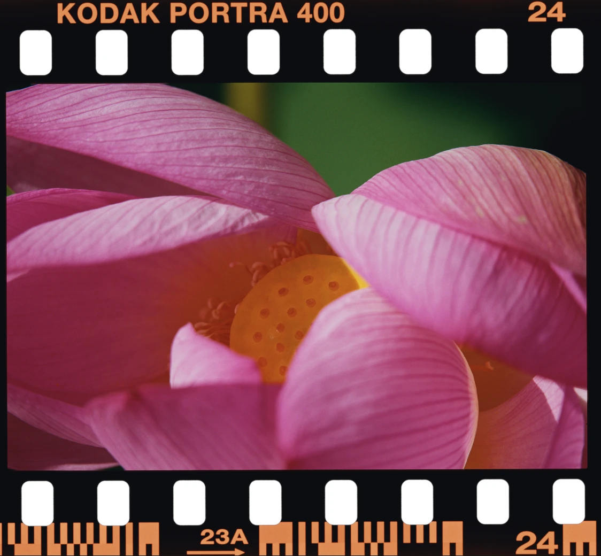

macOS
Make the print on Mac
Work on film and print filtration beside a large preview. Open a folder of photographs or send a rendered JPEG or TIFF from Lightroom Classic.
Open full screenshotFilm simulation, step by step
From photo prep to film, development and print. Free and open source for iPhone, iPad and Mac.

A Silverphase contact sheet
Kodak Portra 400, Ilford HP5 Plus and Kodak Vision3 250D, each rendered in Silverphase.


Five of the six examples use experimental films from MUAStudio’s Fotufilm, adapted by Negs. Film sources
Compare two film stocks
Same original, same paper. Slide between Fujifilm Superia X-TRA 400 and Kodak Vision3 500T and compare the stronger pinks and greens of Superia with the softer palette of 500T. Grain and halation stay on in both renders.


135 / Print
Start with the Portra 400 print, before adding the film edge.
135 / Perforations
Keep the print in place and reveal both rows of perforations.
135 / Frame markings
Look for Kodak Portra 400 lettering, frame number 24 and the markings between frames.

From the film library
Eight covers from the Silverphase library. Each cover takes its cue from the stock’s classic colors, then uses a new layout and lettering rather than reproducing the original packaging.


Cover artwork by Silverphase contributors / akinal5765-byte. Resized for the web; third-party marks are excluded from the artwork license. Artwork credits and terms
Native apps
One darkroom, three native apps
The workflow feels at home on each device: a desktop inspector on Mac, a landscape canvas on iPad and a library you can take along on iPhone.

macOS
Work on film and print filtration beside a large preview. Open a folder of photographs or send a rendered JPEG or TIFF from Lightroom Classic.
Open full screenshot
iOS
Import from Photos or Files, or start with the camera. Rate frames in the local library, copy edits and export a batch.
Open full screenshot
iPadOS
In landscape, the canvas sits beside the inspector. Keep the whole photograph in view while adjusting film, development and print.
Open full screenshotScreenshots show each native app. Libraries are local to each device.
Silverphase
Open source · On-device editing
Free, open source and processed on your device.
The Mac DMG is ad hoc signed and has no Apple notarization.